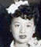

| 148 107 60 25 光 |
#10# |
||||||||||
|---|---|---|---|---|---|---|---|---|---|---|---|
| 149 108 61 26 前 |
#13# 榮亮(1923-1992)  George C. Lee¹ m. Mildred "Milly" Lowe²ʼ³ #12# |
#2# 陳慧珍(1924-2018) m. 1947 温國榮 (1921-?) Genevieve C. Lee m. Edward J. King Chén Huìzhēn m. Wēn Guóróng |
榮發 (1925-1993) Winfred C. Lee m. Rose Marie Róngfā |
#31# 慧英(1927-2010) Josephine C. Lee m. Bert Nunn Huìyīng |
#35# 慧芳(1930- ) Gladys C. Lee m. Julian Gong Huìfāng |
#11# 榮精(1938-) Richard "Dickie" C. Lee m. Marilyn Róngjīng |
#8# 榮濳(1942-1995) Timothy C. Lee m. Gwen Róngqián |
||||
| 150 109 62 27 遠 |
温佑華 m 鄭順子 Anthony (Tony) King (6/18/1953-12/24/2023) m. Susan Wēn Yòuhuá m Zhèng Shùnzǐ |
||||||||||
| 151 110 63 28 遵 |
Edward A.S. King 温盛元 Wēn Shèngyuán |
Kendall King 温盛賢 Wēn Shèngxián |
Brandon King 温盛德 Wēn Shèngdé |
Ryan King 温盛仁 Wēn Shèngrén |
|||||||
| 152 111 63 29 法 |
Archibald King 温世雄 Wēn Shìxióng |
Lincoln King 温世榮 Wēn Shìróng |
Eletta 温世珍 Wēn Shìzhēn |
Corinne 温世娟 Wēn Shìjuān |
|||||||
¹
Leon #32# (friend of George Lee)
²
Wing Lowe #7# (father of Milly Lowe Lee)
³
Stella Lowe #33# (sister of Milly Lowe Lee)
| 温國榮 (1921-?) m. 1947 陳慧珍 (1924-2018) Edward J. King m Genevieve C. Lee Wēn Guóróng m Chén Huìzhēn |
||||||
| Gerald King (1948-) 温佑炳 Wēn Yòubǐng |
Randolph King (1950-) 温佑初 Wēn Yòuchū |
Jacqueline King (1951-) 温桂秀 Wēn Guìxiù |
Anthony King (1953-2023) m. Susan 温佑華 m 鄭順子 Wēn Yòuhuá m Zhèng Shùnzǐ |
Joanne King (1957-) 温玉秀 Wēn Yùxiù |
Theodore King (1958-) 温佑光 Wēn Yòuguāng |
John King (1961-) 温佑輝 Wēn Yòuhuī |
¹ From Tony King's notes.